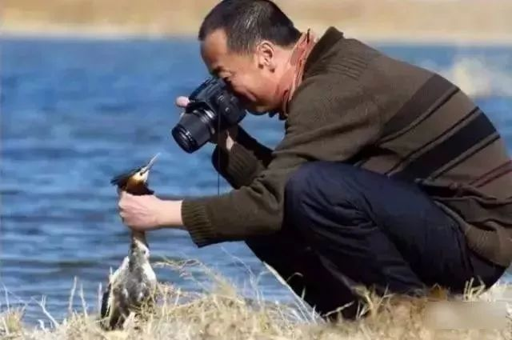

How to Take Sneak Shots of Wild Animals: Some Funny Knowledge
主页
冒犯式拍法
伏地魔拍法
间谍式拍法
夜间偷窥法
间谍式拍法
采用“伏地魔拍法”时，摄影师一般都会尽量避免发出声音，引起动物注意。
但问题来了，很多动物的感官都比人类敏锐。
比如，蝮蛇颊窝能感应750mm到1mm的红外光，而物体只要有温度就会向外辐射热量。
也就是说，蝮蛇自带一个热感受器，正常情况下人向外辐射的红外波长大约12mm，在蝮蛇的感受范围内，所以迷彩服穿得再厚也没用。
这时，就要借“动物间谍”一用了。
“动物间谍”就是安装了摄像头的仿真机器动物，它们混迹在真的动物中间，充当间谍近距离拍摄不同动物的日常生活。